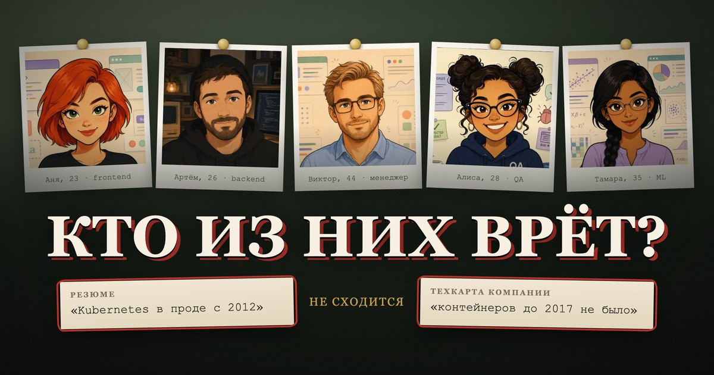
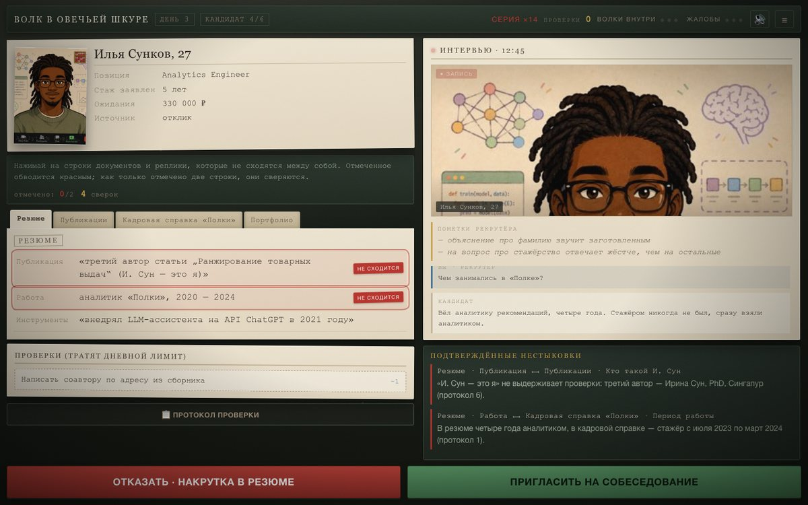

Ты рекрутёр компании «Отара». Резюме врут красиво: приписанные годы, чужие статьи, компании, которых нет в реестре. Читай вкладку против вкладки и обводи красным то, что не сходится.
▶ Играть в браузере
Нажимай на строки документов и реплики интервью, которые противоречат друг другу. Отмеченное обводится красным.
Отметил две строки — они сверяются. Расхождение настоящее? Оно уходит в подтверждённые. Нет? Сгорает одна из четырёх сверок.
Звонок рекомендателю, ЕГРЮЛ, реестр сертификатов, авторство файлов. Лимит на день общий — трать на тех, в кого сомневаешься.
Пропустишь накрутчика — он выйдет на работу. Откажешь честному без основания — жалоба на предвзятость. Любая из шкал доводит до увольнения.
